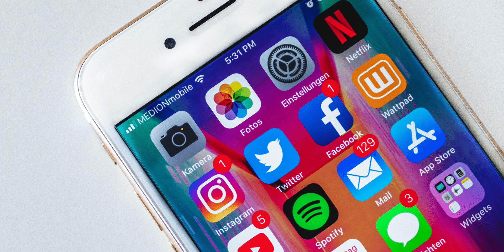

Как провести РК у 3000 блогеров
Определиться с целями
Нужно выбрать цели, к которым мы стремимся, исходя из них нужно выбирать инструменты. На старте же желательно определиться на сколько они достижимы. Как вы думаете, можно получить продажи яхт через твиттер?
Мы добиваемся продаж? Добиваемся узнаваемости? Какой вы выберем KPI в итоге?
Что ещё бывает, какие ориентировочно стоимости с источниками.
Выбрать инструменты
Важный этап на котором мы можем передумать работать с блогерами, решить что для нас лучше подходит телек или газета несмотря на то, что мы очень инновационные. Здесь мы так же должны выбрать наиболее подходящие инструменты. Какая соц сеть?
Может быть несколько соц сетей? Какой тип рекламы? На селебах или на микро инфлюенсерах? Может быть сразу на тех и на других.
Все ниже относится ситуации, когда все же вы выбрали работать с микро инфлюенсерами в том числе. Преимущества микроинфлюенсеров.
Подобрать блогеров
Что такое ЦА? Как её можно задать? Почему не всегда важно чтобы было >50 женщин в подписчиках, если вы ищете женскую аудиторию.
Как обычно подбирают блогеров? — Агентства (откуда они их берут); - Как ищут сами; - Как получают статистику;
Как можно ещё: Наш подход, инструмент, сначала всех проанализировали, потом разговариваем.
Какая разница в трудозатратах?
Согласовать с рекламодателем
На этапе подбора блогеров мы выбрали ЦА, определились с KPI. Для успешного масштабирования это очень плохой этап. Потому что здесь включается человеческий фактор, который необъективен…. Так бы не надо и в будущем к этому все приходят.
Но такая проблема роста существует.
Её решают обычно так…. Берём эксель, отправляем реклу, ведём переписки по почте.
Мы упростили. У нас есть решение похожее на Тиндер, вы листаете страницы блогеров, можете по ним полазить, в это же время видите их статистику. Можете оставить блогера в РК, убрать с указанием причины.
Внутри команды мы используем такое решение для маркировки блогеров тегами, на которых потом учится нейронная сеть.
Коммуникация
На данном этапе важно вспомнить название статьи. Наша цель — 3000 блогеров.
На примере Instagram. Соглашаются на РК за деньги 10–20 процентов блогеров. (из холодных) Соглашаются на РК за CPA 1–3 процента блогеров. Соглашаются на бартер — 2-5 процента.
А это значит что для проведения РК у 3000 блогеров вам нужно поговорить как минимум с 15 000 блогеров.
Как делают обычно?
Как делаем мы?
Добавить в систему коммуникации/ собрать необходимые сведения
Зачем добавлять? Чтобы в будущем было проще коммуницировать, сколько экономии на этом?
Здесь мы уговариваем стать СЗ;
Провести выплату
Как бы нам ни хотелось, мы работаем по предоплате… Заключаем безбумажные договоры. Проводим выплаты.
Контроль публикаций
Контролируем.
Сбор аналитики
Собираем.
Оценка результата
Оцениваем? А как мы оцениваем?
Скорректировать РК и запуститься ещё раз
Выбираем лучших, ищем на них похожих. Оставляем всех неплохих. Добавляем 10 процентов экспериментальных, чтобы найти новую возможность.
Список хаков
- Сначала цели, потом инструменты;
- Считайте KPI;
- Структурируйте данные. Хотя бы эксель, список блогеров сообщениями в телеграм - плохо.
- Быстрее итерируйтесь. Если ваш бизнес зависит от одного размещения микроинфлюенсера - вам стоит задуматься. Быстрее итерации - быстрее возврат инвестиций.
- Не ждите результат сразу. Продажи - это процесс. Бизнес про процессы.
Ну и приходите к нам за инструментами, если вы здесь на долго.